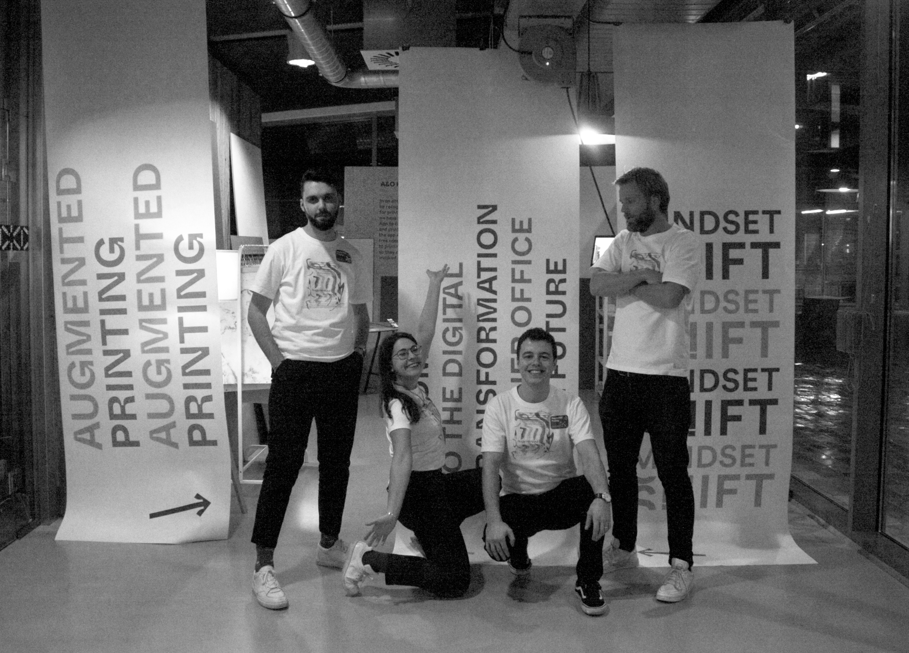
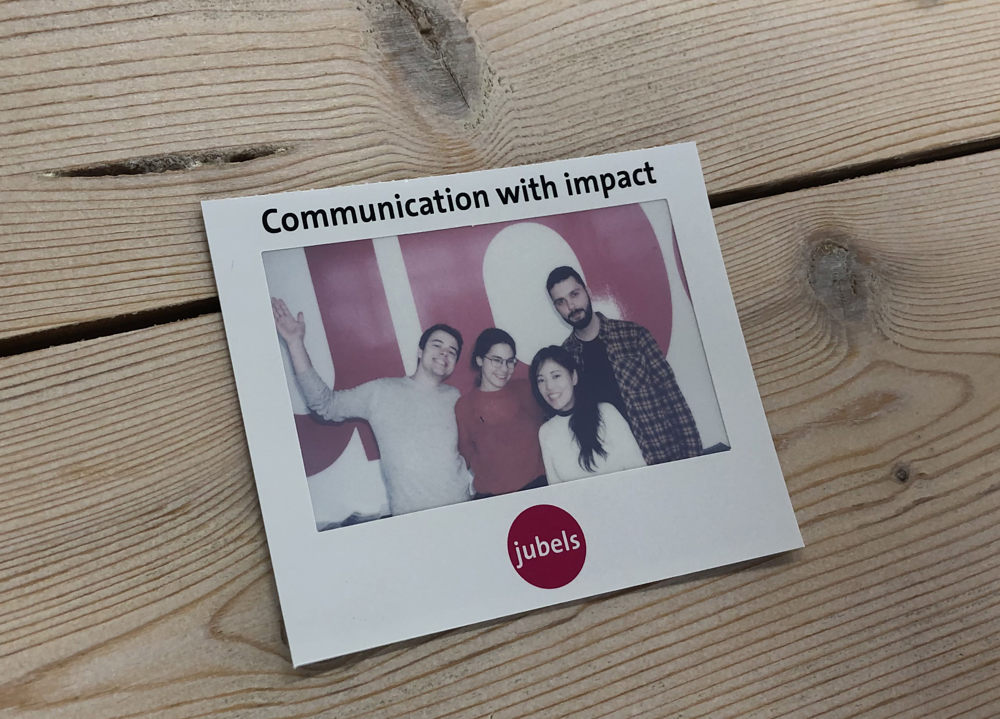

MINDSET SHIFT Toolkit + A&O Hub App
Improving the print industry in the Netherlands.
Client: A&O Fonds grafimediabranche
Duration: 5 months
My role: UX Designer, Web Developer
Date: 09/2019 to 02/2020
A&O Fonds Grafimediabranche helps the graphics and printing sector of the Netherlands by providing education to employees in various companies. Together with the Digital Society School, we were asked to develop new ways of making the industry more connected and engaged.
This project was done together with Batuhan Köksal, Minatsu Homma, Mick Jongeling and Natalia Agafonova.
  Objectives- Provide an educational tool that is accessible and easily usable by stakeholders.
- Bring innovation through a new work and team dynamic culture.
- Improve communication and reach between printing companies, paper suppliers, designers, and clients.
Our initial research showed us that most of the industry’s stakeholders weren’t too familiar with technology, thus limiting the tools we could use to present our solutions. Moreover, A&O Fonds had somewhat of a troubled relationship with their partner printers, due to the absence of a proper PR campaign. Most printers didn’t really believe in A&O Fonds to deliver any helpful products but money. We had the challenge of not only coming up with something that would satisfy our client’s needs, but also change the perspective printers had of A&O Fonds.
 The Process
The Process
Initially, we conducted a series of visits and interviews with graphic designers, book designers, paper producers and consultants that were relevant to the industry in general. Later on, to properly empathize with the main stakeholders of the research, we visited printing companies around the country and spent an afternoon immersed in their processes and work spaces.
These two on-site phases, along with the desk research we conducted, provided us with enough insights to make more established and responsible decisions regarding our project. It became apparent the industry was struggling with innovating their work space, while A&O was struggling to get their message across effectively and in a trustworthy way.